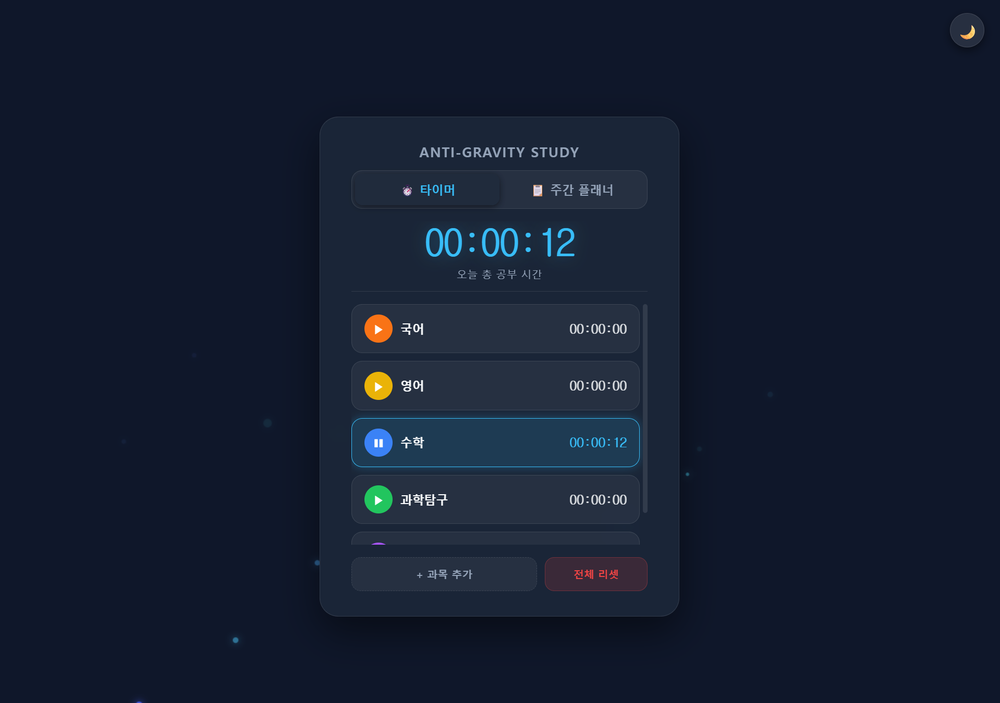
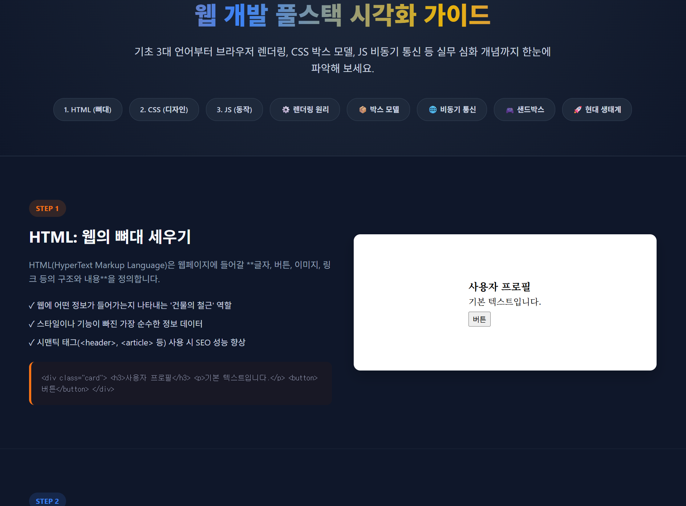
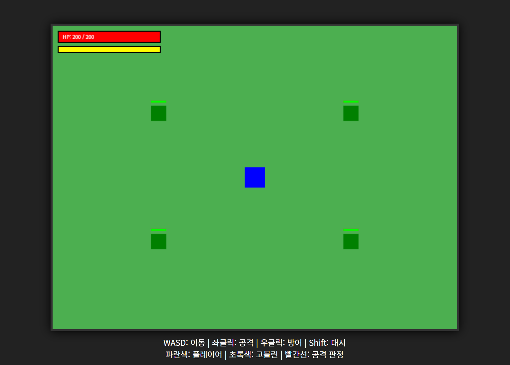
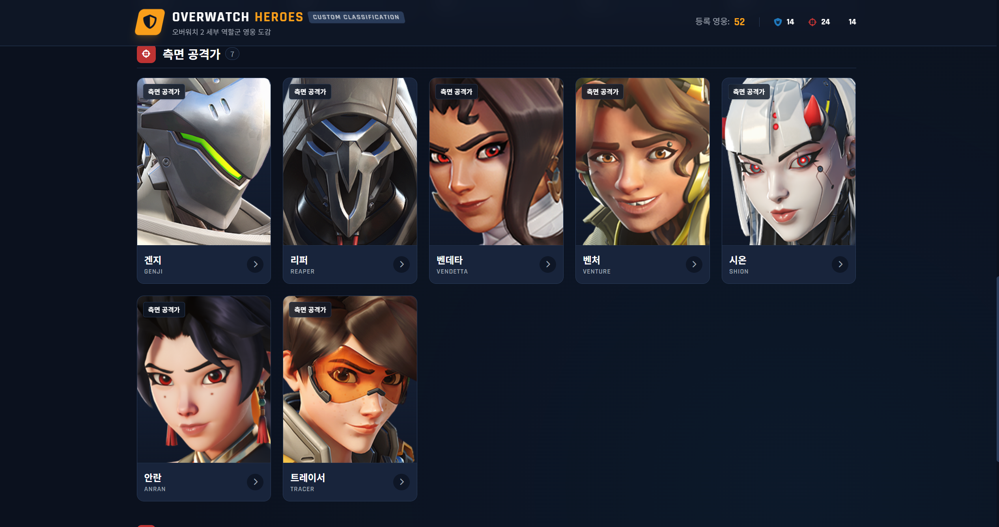

Anti-Gravity Study Timer
집중력을 높여주는 감성적인 유틸리티 앱입니다. HTML5 Canvas API를 사용해 입자들이 중력을 거스르고 천천히 떠오르는 파티클 물리 효과(Anti-gravity)를 60FPS로 구현했습니다.
단순한 시각 효과에 그치지 않고, `setInterval`을 활용한 정확한 과목별 타이머 기능과 LocalStorage를 연동한 데이터 영속성(Persistence)을 보장합니다. 브라우저를 새로고침하거나 종료해도 사용자의 주간 플래너 데이터와 누적 학습 시간이 그대로 유지되도록 상태 관리 로직을 정교하게 설계했습니다.

웹 개발 시각화 교육 가이드
초보자를 위한 동적 웹 작동 원리 시각화 페이지입니다. HTML, CSS, JS가 각각 어떤 역할을 하는지 샌드박스 환경에서 버튼 하나로 토글하며 즉각적인 DOM 변화를 확인할 수 있도록 DOM 조작(Manipulation) 로직을 구현했습니다.
특히 까다로운 개념인 브라우저의 렌더링 파이프라인(DOM Tree -> Render Tree -> Layout -> Paint)과 비동기 처리(Async/Await, Promise) 과정을 CSS Animation과 JS 이벤트 리스너를 결합하여 한눈에 이해하기 쉽게 단계별 인터랙션으로 풀어낸 것이 특징입니다.

도트 액션 게임 프로토타입
웹 표준 기술만으로 구현한 2D 탑다운 액션 게임입니다. 외부 게임 엔진 없이 `requestAnimationFrame`을 사용하여 매끄러운 렌더링 루프를 구축했습니다.
대각선 이동 시 속도가 빨라지는 현상을 방지하기 위한 벡터 정규화(Vector Normalization) 수학 공식 적용, 스태미나 소비 및 회복 메커니즘, 그리고 적(Enemy) 객체가 플레이어를 추적하는 간단한 AI 알고리즘을 설계했습니다. 또한 AABB(Axis-Aligned Bounding Box) 충돌 판정 기법을 적용하여 공격 적중 시 발생하는 넉백(Knockback) 물리 효과를 성공적으로 구현했습니다.

오버워치 2 영웅 도감
실제 서비스되는 외부 REST API를 연동한 데이터 대시보드입니다. Overfast API를 비동기(Fetch API)로 호출하여 JSON 데이터를 파싱하고 화면에 동적으로 렌더링합니다.
단순한 데이터 나열을 넘어, 돌격/공격/지원 등 역할군에 따른 다중 필터링 시스템을 구축했습니다. 특히 네트워크 지연이나 API 호출 제한(Rate Limit) 발생 시 사용자에게 적절한 피드백을 제공하는 에러 핸들링(Try-Catch)과 스켈레톤 UI(로딩 상태)를 적용하여 프론트엔드 관점에서의 안정적인 서비스 구성에 초점을 맞췄습니다.